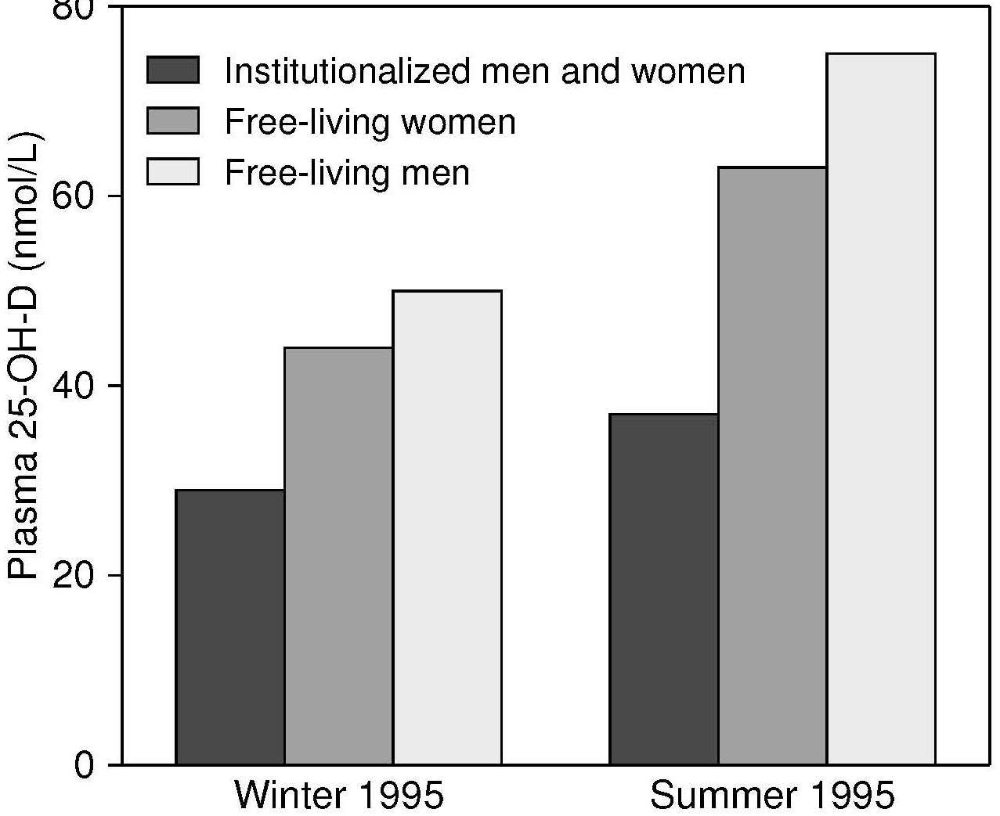

Figure 18b.3. Comparison of mean plasma 25(OH)D levels by season for free-living
elderly men and women and participants in institutions.
Data from Finch et al., 1998, National Diet and Nutrition Survey:
People Aged 65 Years or Over. The Stationery Office, London.